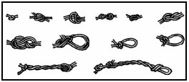

Skaitīšanas sistēmas iedala pozicionālajās un nepozicionālajās.
Datoros lieto pozicionālās skaitīšanas sistēmas - decimālo, bināro, oktālo jeb astotnieku, heksadecimālo jeb sešpadsmitnieku. Pozicionālajās sistēmās cipara atrašanās vieta maina tā vērtību – ja salīdzina skaitļus 7000 un 0007, tad redzam, ka vērtīgāks jeb lielāks ir skaitlis 7000, jo tajā cipars 7 atrodas tūkstošu nevis vienu pozīcijā. Nepozicionālajās skaitīšanas sistēmās cipara vērtība ir nemainīga. Tāda ir, piemēram, romiešu skaitīšanas sistēma, kurā skaitļa vērtību nosaka ciparu savstarpējais izvietojums, nevis pieraksta pozīcija.
| Romiešu skaitļi | Arābu skaitļi |
|---|---|
| V | 5 |
| X | 10 |
| L | 50 |
| C | 100 |
| D | 500 |
| M | 1000 |
| MCMXCVII | 1997 |
Pozicionālajām skaitīšanas sistēmām var būt dažādas bāzes. Mēs ikdienā izmantojam desmitnieku skaitīšanas sistēmu. Tas nozīmē, ka izmantotā bāze ir desmit, tiek izmantoti desmit dažādi cipari no 0 līdz 9, bet skaitļu pierakstā pozīcijas sauc par vieniem, desmitiem, simtiem, tūkstošiem utt., atbilstoši desmitnieka pakāpei. Piemēram, septiņi tūkstoši trīs simti četrdesmit trīs.
| 7 | 3 | 4 | 3 |
|---|---|---|---|
| 3 | 2 | 1 | 0 |
| 103=1000 | 102=100 | 101=10 | 100=1 |
Binārās skaitīšanas sistēmas bāze ir divi, tiek izmantoti tikai divi dažādi cipari – 0 un 1, bet skaitļu pierakstā pozīciju vērtības ir viens, divi, četri, astoņi utt.
| 1 | 0 | 1 | 1 |
|---|---|---|---|
| 3 | 2 | 1 | 0 |
| 23=8 | 22=4 | 21=2 | 20=1 |
Šī skaitļa vērtība desmitnieku skaitīšanas sistēmā ir 1*8+0*4+1*2+1*1=11. Nosaukt binārās skaitīšanas sistēmas skaitli pa pozīcijām, līdzīgi kā decimālajā sistēmā, var, bet tas skan dīvaini – viens astoņi viens divi viens.
Astotnieku jeb oktālajā skaitīšanas sistēmā bāze ir 8, tiek izmantoti astoņi dažādi cipari no 0 līdz 7, skaitļu pierakstā pozīcijas ir viens, astoņi, sešdesmit četri utt.
| 1 | 3 | 4 | 7 |
|---|---|---|---|
| 3 | 2 | 1 | 0 |
| 83=512 | 82=64 | 81=8 | 80=1 |
Šī skaitļa vērtība desmitnieku skaitīšanas sistēmā ir 1*512+3*64+4*8+7*1=2053.
Jo mazāka bāze, jo skaitļa pierakstā vairāk ciparu. 1238=8310=10100112.
Datoros visi aprēķini notiek binārajā skaitīšanas sistēmā, jo to ir visvieglāk attēlot ar elektriskiem signāliem – ja strāva plūst, tiek attēlots 1, ja neplūst 0.
Taču šāds skaitļu pieraksts ir garš un cilvēkiem neērts, tāpēc lietotāja līmenī tiek lietota decimālā skaitīšanas sistēma.
Dažos gadījumos tiek izmantota arī sešpadsmitnieku skaitīšanas sistēma, piemēram, krāsu apzīmējumos, atmiņas adresācijai u.c.
Sešpadsmitnieku jeb heksadecimālās skaitīšanas sistēmas bāze ir skaitlis 16, tiek izmantoti sešpadsmit dažādi cipari no 0 līdz F.
| 0 | 1 | 2 | 3 | 4 | 5 | 6 | 7 | 8 | 9 | 10 | 11 | 12 | 13 | 14 | 15 |
| 0 | 1 | 2 | 3 | 4 | 5 | 6 | 7 | 8 | 9 | A | B | C | D | E | F |
Skaitļa pierakstā pozīciju vērtības ir viens, sešpadsmit, divi simti piecdesmit seši utt.
| 1 | B | 0 | A |
|---|---|---|---|
| 3 | 2 | 1 | 0 |
| 163=4096 | 162=256 | 161=16 | 160=1 |
Šī skaitļa vērtība decimālajā skaitīšanas sistēmā ir 1*4096+11*256+0*16+10*1=6922
Krāsas apzīmējums #5A6E47 nozīmē, ka tās sastāvā ir 5A=90 daļas sarkanās, 6E=110 daļas zaļās un 47=71 daļas zilās krāsas.
Ikdienā dažādās zemēs dažādos laikos cilvēki ir lietojuši un vēl joprojām lieto vēl arī citas pozicionālās skaitīšanas sistēmas. Piemēram, laika skaitīšanā tiek izmantota sešdesmitnieku skaitīšanas sistēma, daudzas lietas (krūzes, karotes, glāzes u.c) bieži pārdod komplektā pa seši vai divpadsmit jeb pusduci vai duci, gadā ir 12 mēneši. Agrāk lietotas arī dažādas citas eksotiskas skaitīšanas sistēmas, piemēram, mezgliņu sistēma.
